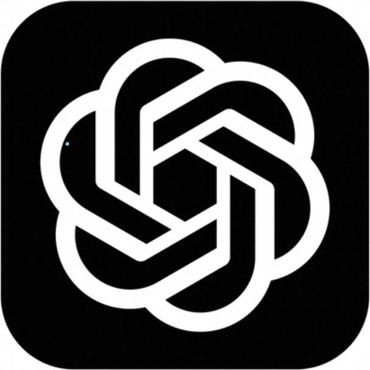
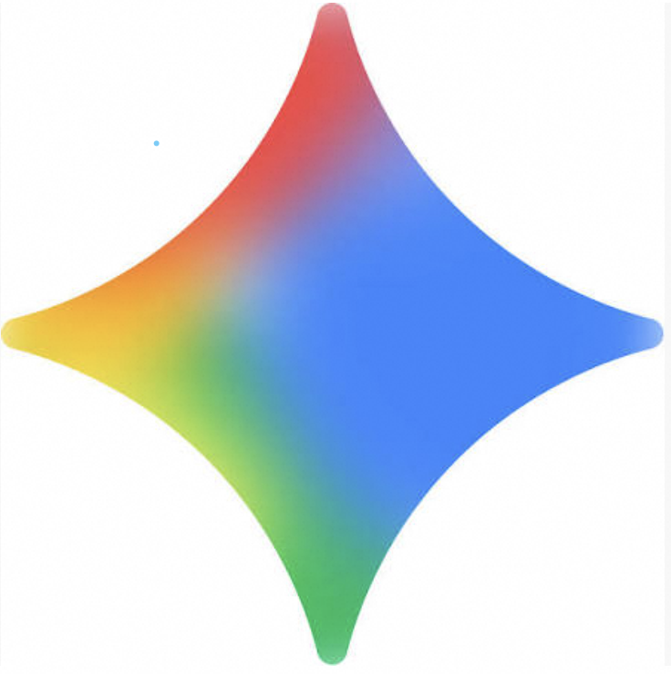
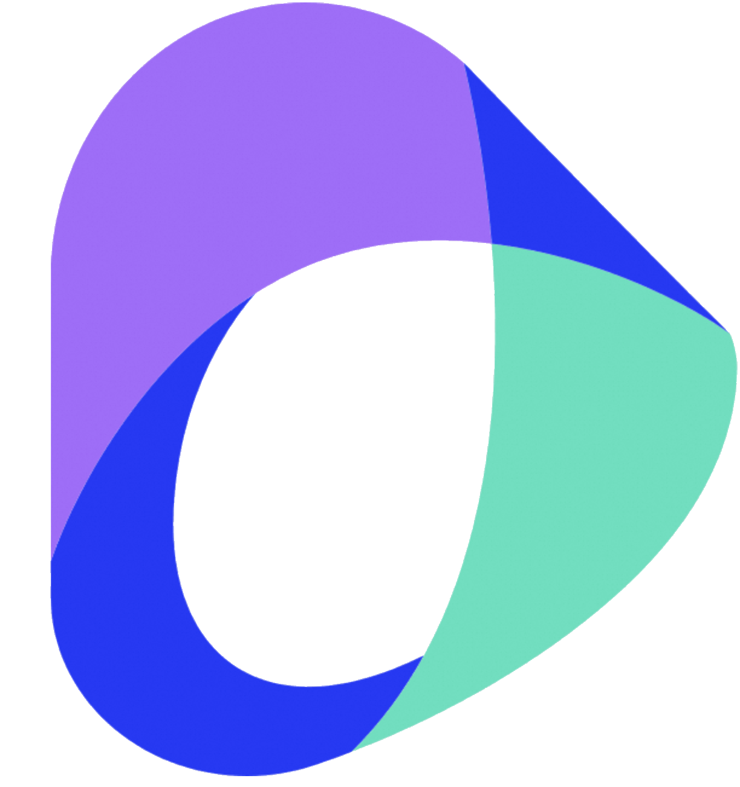

Annotator · VLM
07 / 11
RoboFine-VLM
Scalable Annotator
Fine-tuned Qwen3.5-397B-A17B on FineVLA-Data for robotic action understanding.
VQA Results
| Model | Overall |
|---|---|
| RoboFine-VLM (Ours) | 68.2 |
 GPT-5.4 |
60.2 |
 Gemini-3.1-Pro |
59.6 |
 Doubao-Seed-2.0-Pro |
58.5 |
 Qwen3.5-Plus Qwen3.5-Plus |
55.9 |
| Qwen3-VL-Plus |
47.7 |
Caption-Hard Results
| Model | Overall | Cons | Cov | AHal |
|---|---|---|---|---|
| RoboFine-VLM (Ours) | 82.2 | 80.4 | 71.5 | 94.8 |
| GPT-5.4 | 78.0 | 73.8 | 66.8 | 93.4 |
| Gemini-3.1-Pro | 75.9 | 75.7 | 58.5 | 93.4 |
| Doubao-Seed-2.0-Pro | 73.4 | 72.4 | 63.7 | 84.0 |
| Qwen3.5-Plus |
72.4 | 71.0 | 55.1 | 91.2 |
| Qwen3-VL-Plus |
64.4 | 67.4 | 54.3 | 71.6 |
Page 07 · RoboFine-VLM
Annotator